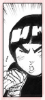
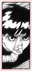

| » P e r s o n a l i t y ;
Lee's personality is one that brings smiles to viewers' faces. He's energetic, protective, full of pride, and incredibly eager to prove himself. Yet at the same time, he's soft, sincere, and honest. He would often do trival things such as snatching up leaves before they fall to the ground, thinking it's one step closer to Sakura liking him. This is similar to the "she loves me, she loves me not" picking of flower petals. But it gives him confidence as well as keeping his speed and abilites in check, so it's not all in vain. He's kind hearted, even to squirrels with explosion notes, saving them at the expense of his last leaf. Lee is not afraid to admit that someone might be more powerful than him. He is always willing to work harder. Every time he is defeated, he puts the blame on himself for not working hard enough. He always carries a positive attitude, and cheers even his rivals on, so that he may get a chance to dual them later. He is far from a sore loser, and is equally friendly to those he beats and those whom he's beaten by. Illustrating with an example would be at his return in chapter 209. He encounters Gaara for the first time since their Chuunin exam dual. Gaara came to obstruct an attempted blow by Kimimaro. Lee, surprised as he was, stays on friendly terms with Gaara despite their past dual. Gaara comments that he was too hasty with Kimimaro, and Lee replies that he holds no grudges, but that Gaara caused him to go through a "hassle" from their previous dual. You'll notice that even though Gaara stops Lee's advances to fight Kimimaro, Lee always retains a polite tone with him ("Please let go!") instead of saying something along the lines of "What the hell are you doing? Let Go!" All the while Gaara fights Kimimaro, Lee observes closely, more than once praising the talents of Gaara. But what you notice about Lee the most is, he never sits back while someone he admires or is important to him is insulted. He's always up to defending those he holds dearly to his heart, no matter what state he's in. Lee is also very well informed and knowledgeable, especially when talking about Neji's fighting style. He is also very sharp, understanding an attack almost immediately and explaining it. When it comes to hard work, no one surpasses Lee. He is the epitome of "hard work pays off" and "no pain, no gain." He can be said as the most determined, dedicated and strong willed out of all the genin. He'd be the first one to go into battle and the last to give up. From his childhood days, he's been teased and ridiculed for not being able to use any ninjutsu or genjutsu. Yet, he practiced taijutsu energetically day and night, non-stop. He believed that he could become an excellent ninja without using any of those techniques. He wasn't wrong. Lee is one of the strongest ninja in the Naruto series, and he proves it time after time. Hand to hand combat might have been dismissed as a weaker jutsu compared to summoning magic before Lee came along, but he changed all that. « reverse |
PRELUDE GENERAL Naruto Terms Chakra LEE First Glance Personality Techniques Fighting Style Transition Weaknesses Analysis RIVALRY vs. Sasuke vs. Neji vs. Gaara vs. Sound vs. Kimimaro RELATIONS Maito Gai Teammates Sakura Naruto EXTRAS Symbolism Seiyuu Quotations References EDEN Reasons Images Wallpapers Fanworks Graphics EPILOGUE Updates Linkage Credits Joined Contact Guestbook |